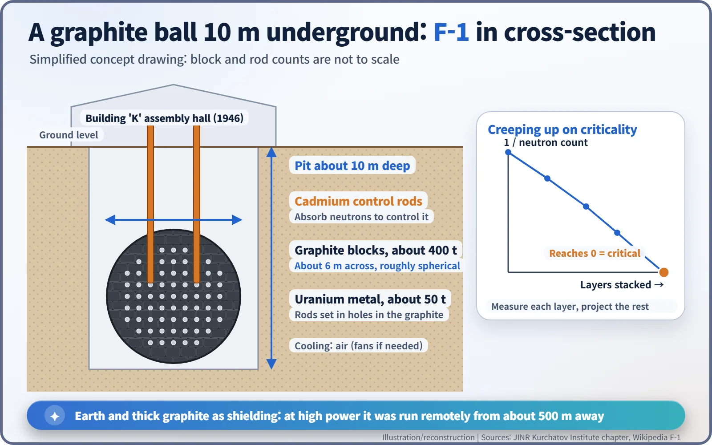
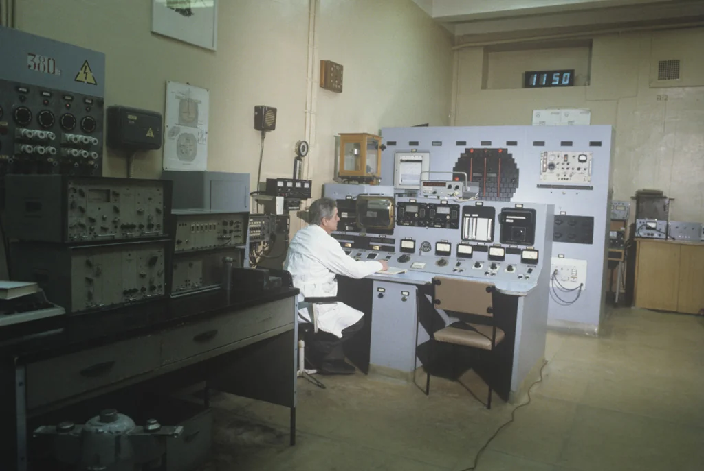
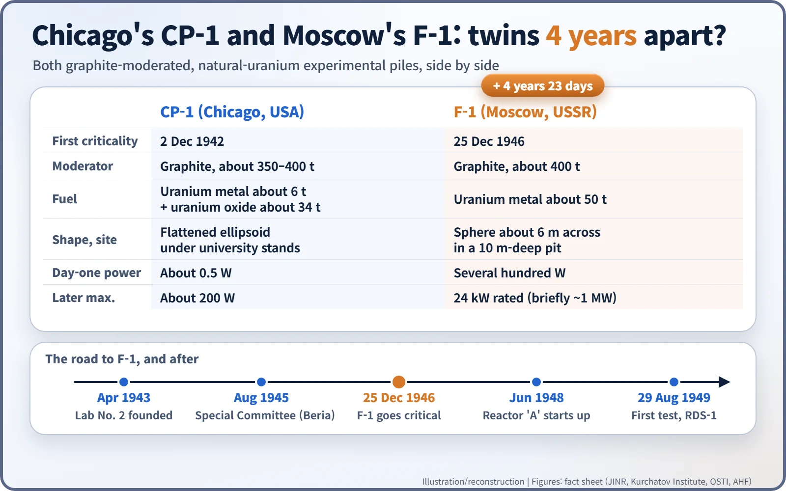
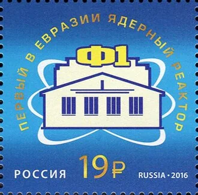

Nuclear History · 133
A Graphite Ball Wakes Up on Christmas Day — the Soviet F-1 Reactor Goes Critical (1946)
A ball of graphite about 6 metres across, 10 metres underground, went critical on an ordinary Moscow working day and set the course for Soviet plutonium production.
On 25 December 1946, an ordinary working day in Moscow, Igor Kurchatov's team brought F-1 to criticality: about 400 tonnes of graphite and 50 tonnes of uranium metal stacked into a ball about 6 metres across in a 10-metre pit. It was the first nuclear reactor in Europe and Asia, and the numbers measured on it shaped the Soviet plutonium production reactor that started up in 1948.
Christmas, but not a holiday
On Wednesday, 25 December 1946, it was Christmas across the Western world. In Moscow it was an ordinary working day. The Soviet Union had used the Gregorian calendar since 1918, so the date was the same, but the Russian Orthodox Christmas follows the old Julian calendar and falls on 7 January, and in an officially atheist state 25 December was not a holiday anyway.
That evening, in a pit dug beneath a workshop on a secret laboratory site, the clicks of a neutron counter began to speed up. For the first time anywhere in Europe or Asia, a nuclear reactor was sustaining a chain reaction on its own. [1] [2]
A practice reactor before a bomb
In August 1945, straight after Hiroshima and Nagasaki, the Soviet government made the atomic bomb its top national priority and handed the effort to a Special Committee led by the secret-police chief Lavrentiy Beria (1899–1953). The scientific leader was Igor Kurchatov (1903–1960), head of the institution known by its bland code name, Laboratory No. 2. [5]
The bomb material of choice was plutonium. Plutonium is made when uranium inside a reactor captures neutrons, so the first requirement was a large production reactor. Designing one meant knowing hard numbers: how well graphite slows neutrons down, and how many neutrons are lost inside uranium. F-1 was the small test reactor built to measure them. The name is a Russian abbreviation for "Physical-1", and at the time Soviet engineers did not even say "reactor": they called it a "boiler" (kotyol). [4]
The real obstacle: clean materials
The single largest problem of the early Soviet programme was getting uranium ore at all. About 100 tonnes of fairly pure uranium oxide found in Germany after the war gave the project breathing room; the physicist Yulii Khariton later recalled that it saved roughly a year. A plant run by the German chemist Nikolaus Riehl (1901–1990), who had been brought to the Soviet Union in 1945, was delivering about three tonnes of uranium metal a week by the last quarter of 1946. [5] [6]
Graphite was just as tricky. Even a trace of an impurity such as boron swallows neutrons, so it does not matter how much graphite you stack if it leaks neutrons like a sieve. The laboratory needed special graphite with an extremely low ash content.
At a Kremlin meeting on 25 January 1946, Stalin is said to have told Kurchatov not to work on a small scale but "broadly, on a Russian scale". The remark is known from Kurchatov's own notes as quoted by historians; the original wording has not been checked here. [3]
Ten metres down, one layer at a time
The pile was assembled in "Building K", a new assembly hall put up in 1946. Inside a pit about 10 metres deep, workers stacked about 400 tonnes of graphite blocks and about 50 tonnes of uranium metal rods. With no glue and no bolts, the bricks built up into a rough ball about 6 metres across, with the uranium set in holes drilled through the graphite. Cadmium rods, which soak up neutrons, controlled the reaction, and air did the cooling. Assembly began in mid-November 1946. [1] [4]

The method was the heart of the experiment. After each new layer the team counted neutrons and plotted the inverse of the count. As the pile approaches criticality, the point where the chain reaction sustains itself, that number falls towards zero, so joining the dots shows in advance roughly how many layers are still needed. Criticality was approached by measurement, not by guesswork.
On the evening of 25 December, with Kurchatov personally in charge, F-1 went critical, and that day its power was raised to several hundred watts. Its rated power was later 24 kW, and for short periods it was pushed to about 1 MW. At high power the radiation around the building was strong enough that, according to Russian accounts, the reactor was controlled remotely from about 500 metres away. [1] [2]

Twins four years apart?
F-1 is often compared with Chicago Pile-1, which went critical 4 years and 23 days earlier. Both were experimental piles of graphite and natural uranium with similar amounts of graphite. But CP-1 relied heavily on uranium oxide, while F-1 was built from uranium metal from the start.
| CP-1 (Chicago) | F-1 (Moscow) | |
|---|---|---|
| First criticality | 2 Dec 1942 | 25 Dec 1946 |
| Graphite | About 350–400 t | About 400 t |
| Uranium | About 6 t metal + about 34 t oxide | About 50 t metal |
| First-day power | About 0.5 W | Several hundred W |
| Later maximum | About 200 W | 24 kW rated (briefly about 1 MW) |

How much espionage mattered is still debated. English-language histories such as Richard Rhodes's Dark Sun (1995) hold that Soviet agents passed on the design of a Hanford test pile and that F-1 was essentially modelled on it. Russian accounts, including those of the Kurchatov Institute, stress that the purification and manufacture of the materials, and the measurements, were done by Soviet teams themselves. Either way, hundreds of tonnes of clean graphite and tonnes of uranium metal still had to be made at home. [2] [4]
What the small reactor left behind
Using constants measured on F-1, a 100 MW plutonium production reactor, "A", was built at Chelyabinsk-40 in the Urals (today Ozyorsk, the Mayak site) and started up in June 1948. That road led to the first Soviet nuclear test on 29 August 1949. [1]
In April 1947 Kurchatov wrote to Beria (translated from the Russian):
"With the level of knowledge we now have, it is already possible to begin developing preliminary designs of power stations, aircraft and ships using the energy of nuclear reactions."
In the middle of a bomb race, he was already looking towards power reactors. [2]
F-1 itself proved remarkably long-lived. Into the early 2010s it served as a reference neutron source for calibrating instruments. Sources differ on when it stopped: Russian-language sources give 2012, while the IAEA research reactor database recorded it as permanently shut down as of November 2016. For its 70th anniversary in December 2016, Russia issued a postage stamp, and a museum opened in the reactor building. [4]
